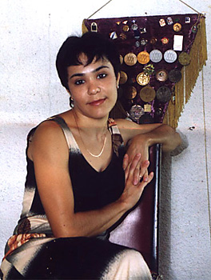

Irina Breigina (URS)
1978 and 1979 Junior USSR Champion

Irina was born in Alma-Ata in 1967 and began
gymnastics at the age of 7, having been selected by a coach from her first-grade
class. After a few months, Irina was dropped from the gymnastics class --
the reason being that she had no promise -- and she and her family spent a nice
summer together. It was to be their last summer together for a long
time.
When the new school year began, Irina decided that she wanted to take up gymnastics again. Coaches Yakov Babushkin and Olga Mataganova at Dinamo took her on (they remained her coaches throughout her career), and two years later at age 10 Irina became the youth champion of Kazakhstan.
Her first trip out of the USSR was in 1979, to a junior dual meet in Rimini, Italy. Irina won first place. That same year, she won the youth championships of the USSR in Leningrad. Her floor routine contained a full-in somersault, and for this spectacular stunt (and her expressive dance) she got a score of 10.2! She was named to the USSR junior national team and was awarded the title "Master of Sport." In 1980 Irina was a member of the USSR team that took top honors at the Druzhba competition in Warsaw. At the age of 12, she was a "Master of Sport, International Class."
Injuries began to plague Irina, and at the 1982 USSR Championships she broke her foot badly. She spent months in a cast and was not expected to return to gymnastics. But Irina continued to work out during her injury (mainly on bars and trampoline, events that didn't put stress on her foot), and once the cast was removed began working on regaining the super-complex elements she had lost. She was able to win the championships of Kazakhstan and the Dinamo club championships, and made a good showing at the 1983 USSR Spartakiade. Once again, she was included on the USSR national team. Irina's international gymnastics career came to an end at the 1985 World University Games, where she was the alternate.
Irina married in 1987 and had her first son the following year. She lived in Israel for eight years (her 2nd son was born there in 1998) and returned to Kazakhstan in 2006. Her sons still live in Israel.
Competition Results
1977
Kazakhstan Youth Championships: 1st AA
1978
Jr. USSR Championships (Candidate for Master of Sport, junior category): 1st AA
1979
Jr. Friendship Tournament (Druzhba): 1st Team, 3rd AA, 2nd V, 2nd FX
Jr. ITA-USSR Dual Meet: 1st Team, 1st AA
Jr. GDR-USSR Dual Meet: 1st Team, 3rd AA
Jr. USSR Championships (Master of Sport): 1st FX
Riga International: 7th AA
1980
Central Asian and Kazakhstan Republic Cup: 1st AA
Cottbus International: 7th AA
Jr. Friendship Tournament (Druzhba): 1st Team, 10th AA, 2nd V
Jr. Kazakhstan Championships: 1st AA, 1st FX
Jr. GDR-USSR Dual Meet: 1st Team, 4th AA
Specialized Sports Schools Championships: 2nd AA
1981
PRK-Kazakhstan SSR Match #1: 1st AA
PRK-Kazakhstan SSR Match #2: 3rd AA
Moscow News: 4th AA
1983
Riga International: 8th AA (exhibition)
USSR Cup: 11th AA
1984
All-Union Dinamo Championships: 2nd AA, 1st UB
1985
USSR Championships: 20th AA
1986
Dinamo Championships: 3rd AA
This page was created on December
5, 2001 and was last updated on May 16, 2026.
© Gymn Forum